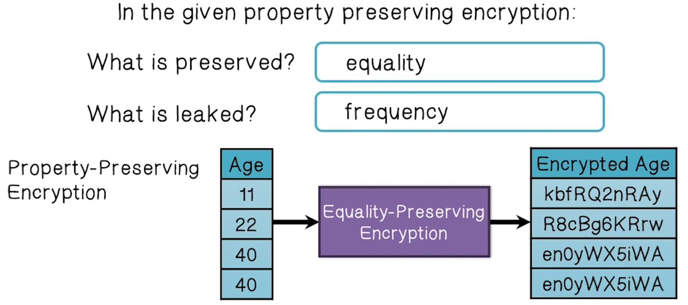
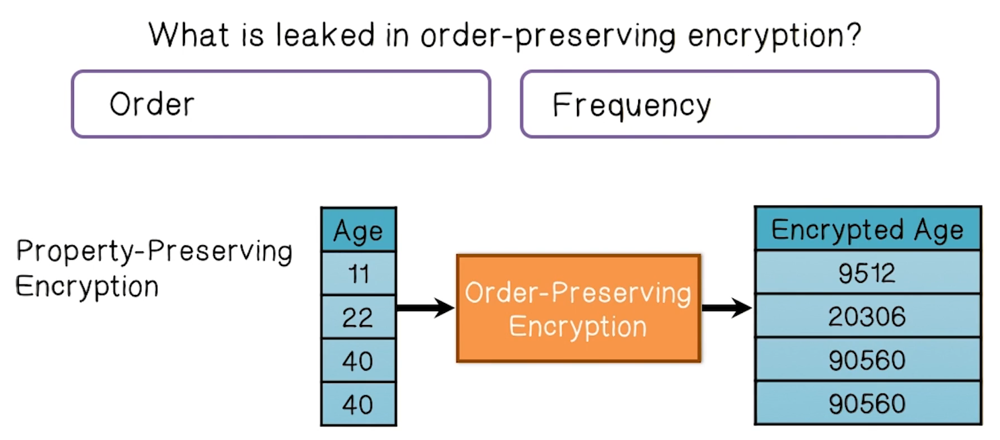
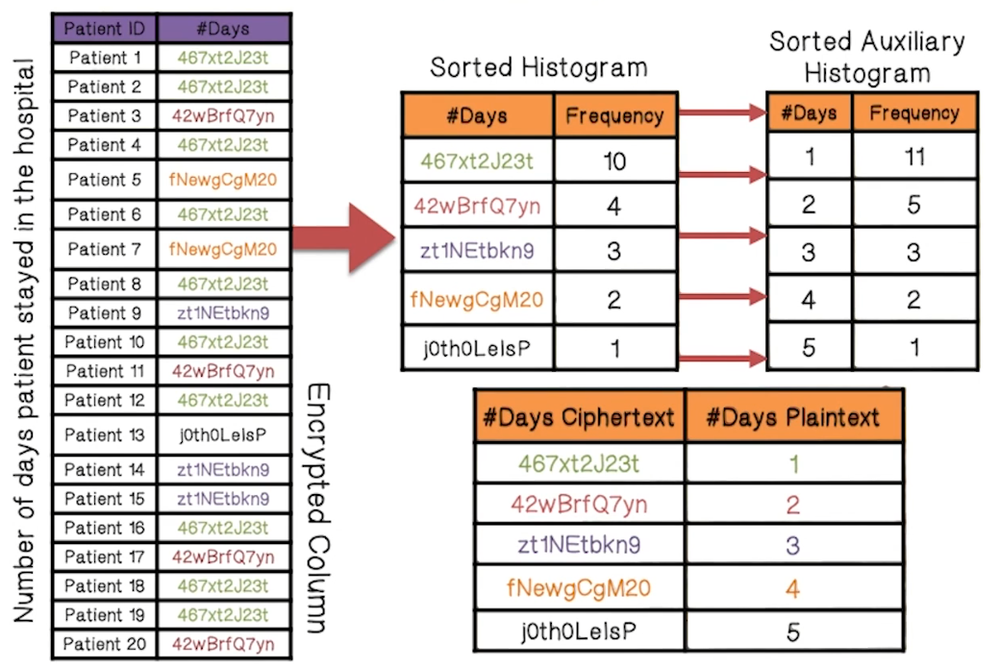
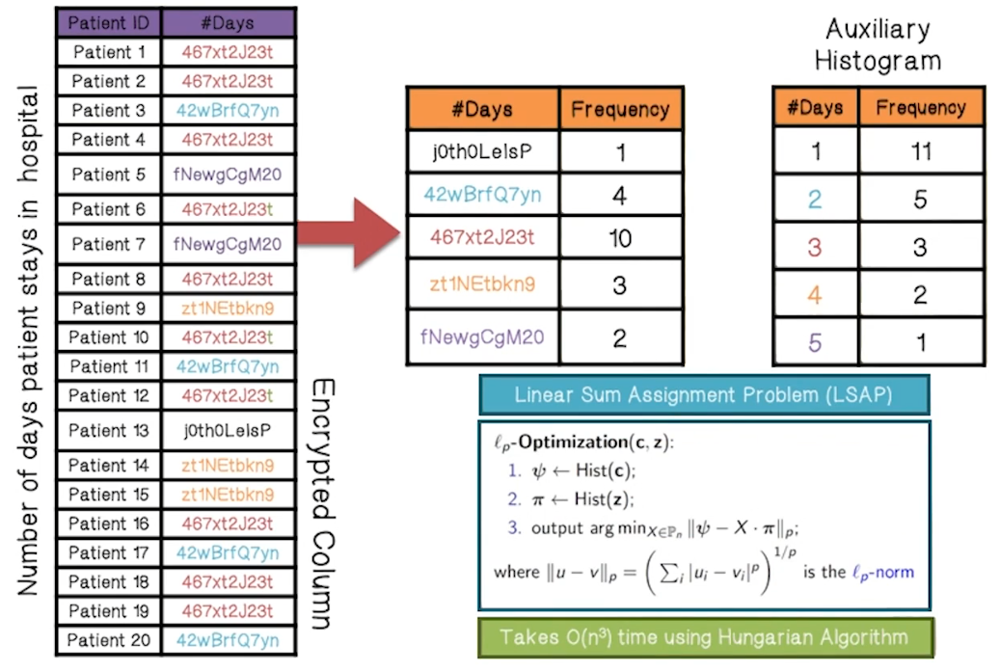
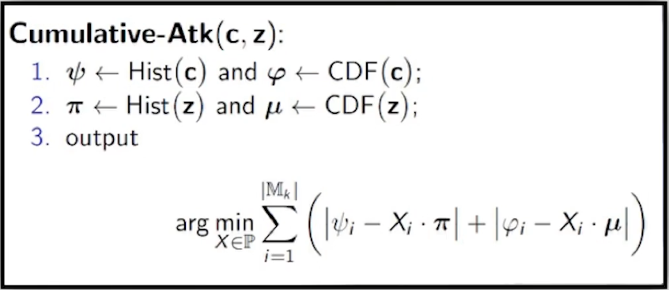
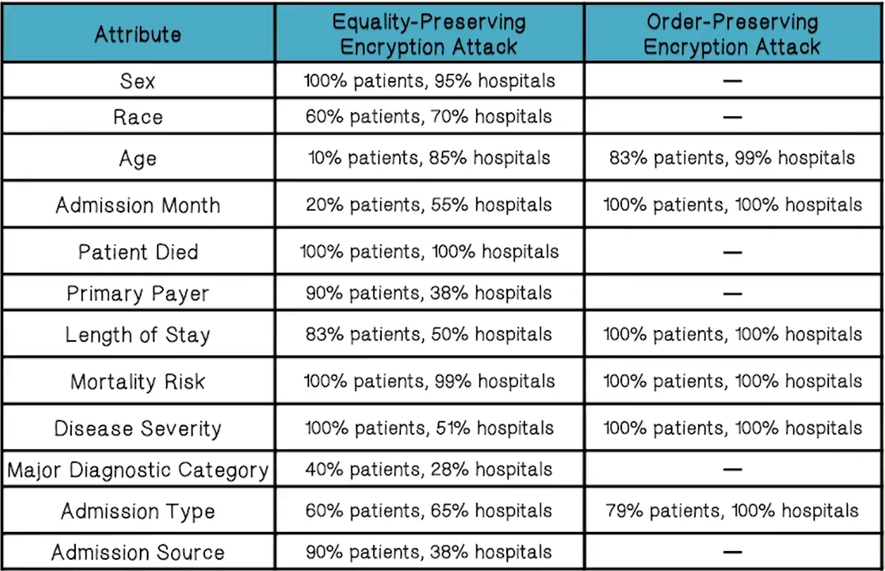
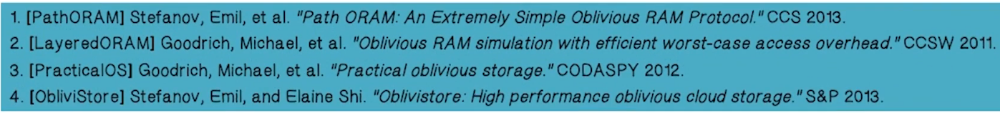

NetSec Lecture Notes - Lesson 13 - Property-Preserving Encryption - Oblivious RAM
Property-Preserving Encryption - Oblivious RAM
- Going to continue focus on the cloud, and discuss challenges of data privacy protection
How Do Data Breaches Happen?
- In a cloud environment, users interact with data in applications stored in cloud infrastructure
- e.g. Doctors/Nurses accessing patient medical data on a hosted EMR system
- Data is often the most valuable target to an attacker
- How can we protect the data?
- Encryption!
- Challenge, though, is that the applications can’t use encrypted data, so they must also have a key to it. How to get both protection and usability?
Encryption Quiz
- Computations performed on encrypted data matches the result of the computation on the plaintext
- Homomorphic
- Encrypted data is in the same order as the plaintext
- Property Preserving
- A secret key that allows someone to learn the function that is being encrypted
- Functional
- Several parties can compute a function using inputs that are kept private
- Secure Computation
- Encyrpted data that can be searched using encrypted keywords
- Searchable
Property Preserving Encryption (PPE)
- PPE is widely deployed
- PPE is Popular because:
- Deployability
- No change to application and database servers is needed
- Expressiveness
- Supports most common SQL queries
- Efficiency
- ~25% overhead
- Security
- Mixed bag. We will discuss further
- Deployability
PPE Leak Quiz One
- Standard Encryption
- Leaks nothing except size of input
 
PPE Leakage
- What does this leakage mean for real applications?
- Renders data susceptible to inference attacks if stolen
- Example given is encrypted private medical information, when combined with plaintext public information, can be used to infer PHI/PII
Attacks on Equality-Preserving Encryption
Frequency Analysis Attack

ℓp-Optimization Attack
- Minimize a cost function that measures the difference between encrypted and auxiliary histogram

Case Study
- In case study with medical records, this approach was very effective
- Sex of 100% of the patients for 95% of hospitals studied was decrypted
- Mortality Risk of 100% of the patients for 99% of hospitals studied was decrypted
- Major Diagnostic Category of 40% of the patients for 28% of hospitals studied was decrypted
- Death of 100% of the patients for 100% of hospitals studied was decrypted
- Age of 10% of the patients for 85% of hospitals studied was decrypted
- Length of Stay of 83% of the patients for 50% of hospitals studied was decrypted
Attacks on Order-Preserving Encryption
Cumulative Attack
- Linear Sum Assignment Problem
- Takes O(n3) time using Hungarian Algorithm
- Cumulative attack exploits both order and frequency

- Basically, by combining order and frequency, the attacker can tell for each ciphertext
cwhat proportion of values are less thanc- Leverages Cumulative Distribution Function of encrypted data to better match encrypted values to plaintext values
Case Study
- In case study with medical records, this approach was very effective
- Length of Stay of 100% of the patients for 100% of hospitals studied was decrypted
- Age of 83% of the patients for 99% of hospitals studied was decrypted
Attack Recap

Oblivious RAM (ORAM)
- Suppose we don’t trust our cloud provider
- We could encrypt our data on the cloud storage server, and retrieve+decrypt it whenever we want to use it
- That still leaks the access pattern of how we use that data
- Oblivious RAM
- Obliviousness
- For any fixed size request sequence, the associated storage accesses observed (by the cloud) are statistically independent of the requests
- Techniques
- Operates on fixed size data blocks
- Encrypt blocks with ciphertext indistinguishability
- Dummy accesses, re-encryption, shuffling, etc
- Obliviousness
- Some ORAM Systems
- Tree-based: PathORAM
- Layered-based: LayeredORAM
- Large messages-based: PractialOS
- Partition-based: ObliviStore
- 
ORAM Quiz
- Client must have a private source of randomness
- True
- Data does not have to be encrypted, since there is no access pattern
- False
- Each access to the remote storage must have aread and a write
- True